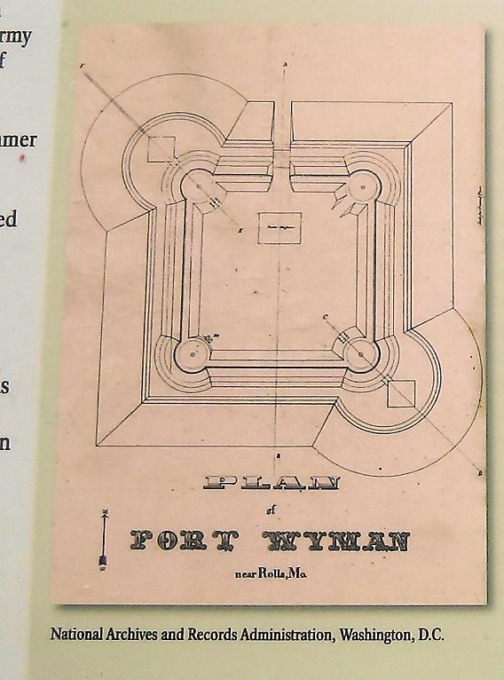
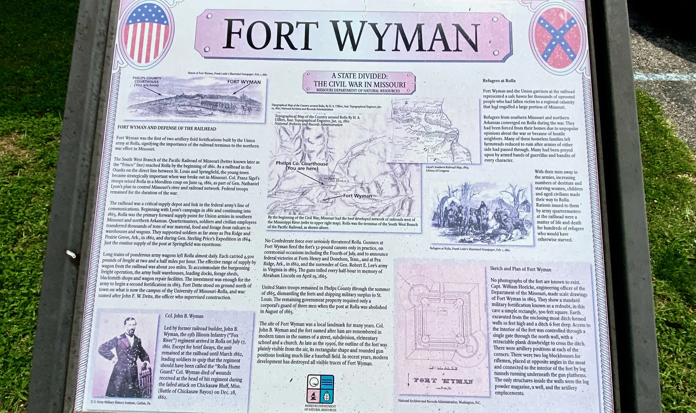
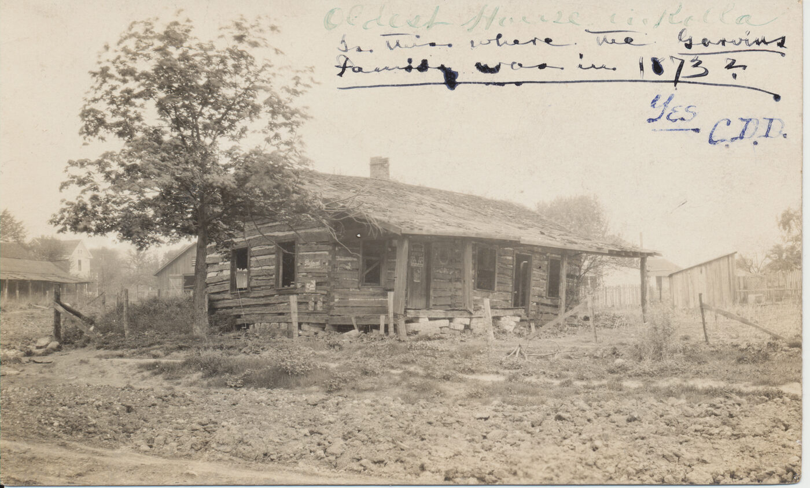
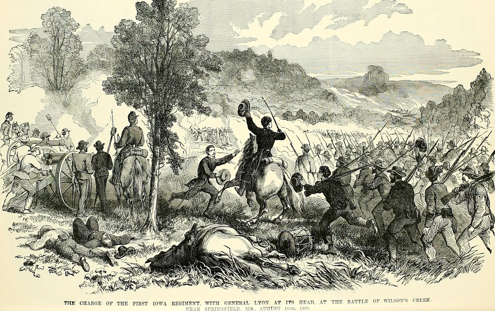

★ At a Glance
Charles served at Rolla, Missouri — where Fort Wyman was the main Union fortification — on detached service from 27 March 1865 through 1 July 1865, about 3 months, under G.O. No. 82 (Fold3 reading) / S.O. No. 14 (NARA reading) of the Headquarters of the Department of the Missouri. He arrived at Rolla after the long ~11-month New Madrid Tour 2 ended on 27 March 1865, and left Rolla on 1 July 1865 when transferred to Department HQ St. Louis under S.O. No. 159. Fort Wyman is the fort Charles named in his 1890 pension declaration as the location of the heavy-lifting incident that produced his right-inguinal-hernia disability claim. The carded record places Charles at "Rolla, Mo." for this window — consistent with the "Fort Wyman" pension wording, since Wyman was the main fort there. The literal word "Wyman" does not appear on any muster card.
What the fort looked like — the 1865 plan drawing
★ No photographs of Fort Wyman are known to survive. The fort's design is documented by the 1865 scale drawing made by Capt. William Hoelcke, engineering officer of the Department of the Missouri, the year Charles served at the post. The original drawing is held by the U.S. National Archives in Washington, D.C. and was scanned and digitized by the Curtis Laws Wilson Library at Missouri University of Science & Technology (MS&T) for their Civil War research guide:

+ See the same plan reproduced on the on-site readerboard at the Old Phelps County Courthouse

Other period imagery — life at the post
Beyond the Hoelcke plan, the visual record of Civil War-era Rolla is dominated by Frank Leslie's Illustrated Newspaper, Library of Congress holdings, and the Missouri History Museum's collection of war-correspondent sketches.




Visit today — museums, markers, and the site
Fort Wyman itself is gone, but four sites in Rolla preserve the history Charles passed through:
Phelps County Historical Society Museum
The museum operates out of the historic Old Phelps County Courthouse (Greek Revival, built 1860–1868, on the National Register of Historic Places) at 305 W. 3rd Street, Rolla, MO 65401. The collection covers Phelps County's Civil War history alongside mining, agriculture, transportation, and military exhibits. The Society also maintains the 1838 Dillon Log House and the 1860 Limestone Block Jail nearby. Open April – October, Saturdays 9 AM – 4 PM, with other days by appointment. Admission is free.
Links: phelpscountyhistoricalsociety.com · Museums & sites · Facebook
Fort Wyman Readerboard at the Old Phelps County Courthouse
The reproduction of Capt. Hoelcke's 1865 fort plan (the image at the top of this page) is mounted on the grounds of the Old Phelps County Courthouse — same address as the Historical Society, 305 W. 3rd Street. This is the closest visual rendering of what Fort Wyman actually looked like. Free and accessible during museum hours.
Fort Wyman Historical Marker
A roadside marker about a mile north of the original fort site, at GPS 37.946085, -91.773274 in Rolla. Cataloged on The Historical Marker Database (HMDB) entry for Fort Wyman, with photos and full marker text. Waymarking.com listing mirrors the marker.
Fort Wyman Park / Wyman Hill — the original site
The actual location of the fort — the four-bastion earthwork — is at GPS 37.936881, -91.775858, on the south side of Rolla. Now a small park / hill on private and city land. Open in Google Maps. The earthworks are gone — visible from the air into the 1990s, then erased by development — but this is the ground Charles walked.
Cross-references for further reading: Fort Wyman (Wikipedia) · FortWiki Fort Wyman entry · Community and Conflict — Phelps County Civil War archive · Missouri S&T Civil War research guide (Missouri University of Science and Technology — formerly the Missouri School of Mines, sits on the grounds of the second fort, Fort Dette, that Rolla had during the war).
Charles's service here
| Date / period | Status | Source |
|---|---|---|
| ★ 27 March 1865 | ★★★ G.O. No. 82, Hd Qrs Dept of the Mo. — a single general order with two distinct actions for Charles: (a) reduction from Sergeant back to Private (effective dated 15 March 1865) and (b) detachment from New Madrid to Rolla, Mo. Both actions are recorded by reference to the same order. NARA also reads the order as "S.O. No. 14, 24 March 1865" — likely a clerk's separate transcription of the same G.O. No. 82. | Fold3 PG 6 & NARA PG 11 Card B: "On Det Serv at Rolla Mo. G.O. N° 82 H.Q. Dept of the Mo. March 27, 65"; Fold3 PG 4 & NARA PG 12 Cards A/B: "Served as Sgt until Mar 15, 65 when reduced to Ranks Per [G.O.] No. 82" |
| May – June 1865 | Continued Rolla detachment under same order | Fold3 PG 5 & NARA PG 11 Card C (May–June 1865 muster) |
| 1 July 1865 | Rolla detachment ends. Charles transfers to Department HQ, St. Louis under S.O. No. 159, 1 July 1865. End of his Rolla / Fort Wyman service. | Fold3 PG 4 & NARA PG 12 Card A |
The carded record places Charles at "Rolla, Mo." from 27 March – 1 July 1865 — Fort Wyman was the main Union fortification at Rolla, so this is the fort Charles's pension declaration named. The literal word "Wyman" does not appear on any muster card; the previous claim of "first verbatim Wyman hit anywhere" was a transcription error and has been retracted. The fortification reading is consistent with Charles's own 1890 declaration.
Historical context — the post and the fort
Rolla, Missouri — the Union supply depot for southwest Missouri
Rolla was one of three major Union logistical hubs in 1860s Missouri (the others being St. Louis and Springfield). The St. Louis & San Francisco Railroad's terminus at Rolla made it the railhead for everything moving south and west toward Springfield, Cassville, and the Arkansas line. Through the war years it served as a forward supply depot, a remount station for cavalry, a hospital point, and a mustering-out station. By 1865 — Charles's window — Rolla was past its strategic peak; the war was winding down, and the post was being progressively closed. "The remaining government property required only a corporal's guard of three men when the post at Rolla was abolished in August of 1865."
Fort Wyman — the south-of-Rolla fortification
Fort Wyman was a 4-bastion, square-pattern earthwork on a hill on the south side of Rolla, Phelps County, Missouri. It was named for Col. John B. Wyman, 13th Illinois Infantry, killed at Chickasaw Bayou (near Vicksburg) on 28 December 1862 — Wyman had commanded the post at Rolla in 1861 and had supervised the laying-out of the original fortifications. The fort proper sat south of the town and the Pacific Railroad terminus, dominating the high ground. It was decommissioned in summer 1865 and the earthworks gradually erased; today the site is partially preserved at Fort Wyman Park / Wyman Hill on the south side of Rolla.
The Department of the Missouri jurisdiction
Charles's governing orders for the 1865 details all originated at the Headquarters of the Department of the Missouri in St. Louis. The Department was commanded during this period by Maj. Gen. Grenville M. Dodge (December 1864 – February 1866) and then briefly by Maj. Gen. John Pope, who personally signed Special Order No. 92 (4 November 1865) that relieved Charles from his subsequent Department HQ St. Louis detachment (NOT from the Rolla detachment, which had ended in early July under S.O. No. 159).
What the muster cards say — verbatim
"On Det Serv at Rolla Mo. G.O. N° 82 H.Q. Dept of the Mo March 27, 65." — Fold3 PG 6 / NARA PG 11 Card B (March–April 1865 Battery Muster Roll)
"On Det Serv at Rolla Mo. G.O. N° 82 Hd. Q[r]s Dept of the Mo. March 27, 65." — NARA PG 11 Card C (May–June 1865 Battery Muster Roll)
"On Det Serv at Dept Hd Qr St. Louis Mo. S.O. No 159 July 1, 65. Served as Sgt until Mar 15, 65 when reduced to Ranks Per [G.O.] No 82" — Fold3 PG 4 / NARA PG 12 Card A (July–August 1865 Battery Muster Roll). The 1 July 1865 transfer was BACK to St. Louis (Department HQ), not a continuation of the Rolla detachment. The earlier "Wyman Hd Qrs Rolla Mo July 15" reading was a transcription error. The "served as Sgt until Mar 15, 65 when reduced to Ranks" annotation documents the rank change four months EARLIER, not at the end of the year.
"Head Quarters, Department of the Missouri. St. Louis, Mo., Nov. 4, 1865. Special Orders No. 92 — Extract. The following named enlisted men are hereby relieved from special service, at these Head Quarters, and will report forthwith to their respective Company Commanders, for duty, to wit: Private C. L. Gannsen, 2d Mo. Art'y. The Q.M. Department will furnish the necessary transportation. By Command of Major General Pope: J. W. Williams, Assistant Adjutant General." — Fold3 PG 24 / NARA PG 04 (Special Order No. 92, original on Department letterhead). The order describes Charles as "Private" — confirming he had been reduced from Sergeant well before this date (15 March 1865). The order relieves him from his duty at Department HQ St. Louis, not from Rolla.
"Hd Qs Dept of the Mo, St Louis Mo, Novbr 4, 65. Special Order No. 92. Relieving Priv. L. C. Gannsen, 2nd Mo. Lt. Art., from duty at Hd Qs Dept of the Mo. … Recd Hd Qt 2nd Mo L Art Novbr 10/65." — Fold3 PG 23 / NARA PG 05 (filing-jacket spine of Special Order No. 92). The bottom-edge endorsement "Recd Hd Qt 2nd Mo L Art Novbr 10/65" documents the receipt at Battery HQ on 10 November 1865 — six days after the order's issue.
Comprehensive sources
Primary muster-card and pension sources (Charles's record)
- Fold3 / NARA M405 Compiled Service Records (25 pp.) — primary source for the verified verbatim readings on this page: Fold3 PG 4 (the rank-reduction "Mar 15, 65" notation + the post-1 July 1865 muster), PG 5 / PG 6 (the May–June 1865 + March–April 1865 Rolla detachment cards naming G.O. No. 82), PG 23 (the receiving endorsement at Battery HQ for S.O. No. 92), PG 24 (the actual S.O. No. 92 text).
- NARA mail-order Compiled Service Record packet (G11-422819443E, 13 pp.) — parallel scan; cross-corroborates the Fold3 readings on PG 11 Cards B/C and PG 12 Cards A/B/C. NARA reads "S.O. No. 14, March 24" where Fold3 reads "G.O. No. 82, March 27" for the same order.
- Compiled Service Record (Doc O — single enlistment-summary card).
- Civil War Pension File F41-523680269E (40 pp.) — Charles's 1890 Declaration for Invalid Pension (Pension Page 14) names "Fort Wyman" as the location of the heavy-lifting injury and the unit being drilled as the "64th Illinois Infantry"; the 1891 War Department roll-search reply (Pension Page 36) returned negative on the 64th Illinois — see the research log for the analysis.
Secondary historical sources — the fort itself and the engineer's plan
- Capt. William Hoelcke, U.S. Army Corps of Engineers, Department of the Missouri — 1865 scale drawing of Fort Wyman. Original held by the U.S. National Archives and Records Administration, Washington, D.C. Digital scan via the Curtis Laws Wilson Library at Missouri University of Science & Technology — "MSM and the Civil War" research guide, where the drawing is captioned "Plan of Fort Wyman in Rolla, MO. Was originally selected location for the Missouri School of Mines and Metallurgy."
- Fort Wyman (Wikipedia).
- Fort Wyman — FortWiki (CC BY-SA 4.0) — includes the readerboard photograph at the Old Phelps County Courthouse and detailed engineering description.
- Fort Wyman Historical Marker — HMDB.org · Waymarking.com listing.
- "Fort Wyman in Rolla, Missouri" 1958 site photograph — Missouri History Museum (P0084-2461).
Secondary historical sources — Civil War Rolla and the Wilson's Creek context
- Battle of Wilson's Creek (Wikipedia) — the August 1861 Union defeat that drove Sigel's army back to Rolla, prompting the construction of Fort Wyman.
- "General Franz Sigel Arrives in Rolla, June 14, 1861" — Missouri Life.
- "Rolla During the Civil War" — Missouri and Ozarks History blog.
- "Rolla, Missouri – The Middle of Everywhere" — Legends of America.
- "General Lyon's March of 1861" — The Civil War in Missouri.
- Community and Conflict — Phelps County (Ozarks Civil War archive).
- State Historical Society of Missouri — Phelps County manuscripts.
- The 13th Illinois Infantry, Col. John B. Wyman (the regiment that built and named the fort in 1861). Wyman died at Chickasaw Bluff, Mississippi, 28 December 1862.
Secondary historical sources — the post and command context
- Department of the Missouri (Wikipedia) — the headquarters jurisdiction issuing G.O. No. 82, S.O. No. 159, and S.O. No. 92.
- Maj. Gen. Grenville M. Dodge (Wikipedia) — Department commander Dec 1864 – Feb 1866; G.O. No. 82 issued under his command.
- Maj. Gen. John Pope (Wikipedia) — signed S.O. No. 92 (4 Nov 1865) personally, relieving Charles from his Dept HQ St. Louis duty.
- 49th Wisconsin Volunteer Infantry (Wikipedia) — at Rolla 13 March – August 1865; the strongest candidate for the unit Charles was drilling.
- Battery B, 2nd Missouri Light Artillery (Wikipedia) — Battery B itself was at Franklin, Mo. (not Rolla) through 1 June 1865, then re-equipped as cavalry and sent to Omaha. Charles's Rolla service was therefore an individual detached assignment away from his battery, not a battery presence.
Visit today (museums, markers, and the site)
- Phelps County Historical Society Museum — at the Old Phelps County Courthouse, 305 W. 3rd Street, Rolla, MO 65401. April–October, Saturdays 9 AM – 4 PM. Includes the Fort Wyman readerboard reproducing the Hoelcke plan. Also: Museums & sites · Facebook.
- Fort Wyman Park / Wyman Hill — the actual fort site, GPS 37.936881, -91.775858, on the south side of Rolla. Open in Google Maps. Earthworks gone but ground walkable.
- Missouri University of Science & Technology (Missouri S&T, formerly Missouri School of Mines) — sits on the grounds of Rolla's second Civil War fort, Fort Dette. The university's "MSM and the Civil War" research guide hosts the digitized Hoelcke plan.
Cross-references on this site
- → Fort Wyman research log — hypothesis tree, six candidates tested for the unit Charles drilled, definitive next steps.
- → Where Charles Served — posting-by-posting timeline
- → Battery B, 2nd Missouri Light Artillery
- → St. Louis Garrison Forts · St. Louis Smallpox Hospital · New Madrid — the other postings inside Charles's enlistment
★ Research log — open question on the unit Charles drilled
Charles's pension declaration claims he was at Fort Wyman as a drill instructor for the "64th Illinois Infantry." The 64th Illinois itself was with Sherman in Tennessee/Georgia/Carolinas in 1865 — the Pension Bureau's 1891 War Department roll-search returned correctly negative. So which unit was Charles actually drilling at Rolla?
This is an active forensic question with six free-source rounds of investigation done (May 2026). The strongest current candidate is the 49th Wisconsin Volunteer Infantry — at Rolla 13 March – August 1865, brand-new green one-year regiment, right administrative jurisdiction. The corrected reading (27 Mar – ~early July 1865 for Charles's Rolla detachment) gives an even tighter overlap with the 49th's documented Rolla garrison: Charles arrived at Rolla two weeks after the 49th did, and the 49th was the only green infantry regiment garrisoning Rolla in that exact window. Definitive resolution requires the manuscript text of Special Orders Nos. 82, 159, and 92 themselves (NARA RG 393, ~$30 mail order each).
→ Open the full Fort Wyman research log — hypothesis tree, 6 candidates tested and eliminated, sources, definitive next steps